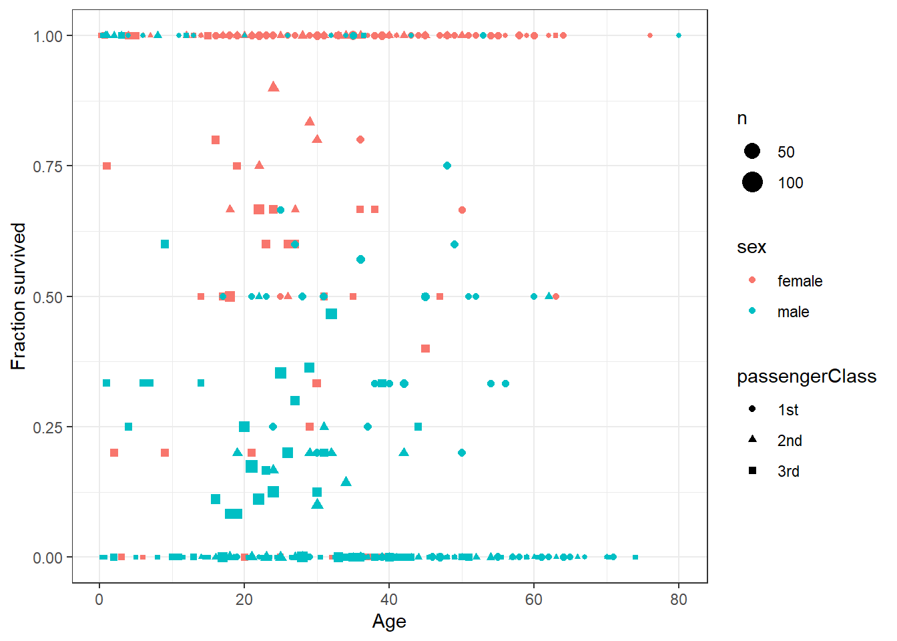

Econometrics II Notes 20201
1/20/2021
1 Limited dependent variable models
1.1 Some example data
##
## Attaching package: 'dplyr'## The following objects are masked from 'package:stats':
##
## filter, lag## The following objects are masked from 'package:base':
##
## intersect, setdiff, setequal, unionD<-(data.frame(read.csv("https://vincentarelbundock.github.io/Rdatasets/csv/carData/TitanicSurvival.csv"))
)
DSummary<-D %>% group_by(sex,age,passengerClass) %>% summarize(fracSurvived = mean(1*(survived=="yes")),n=n(),.groups=NULL)## `summarise()` regrouping output by 'sex', 'age' (override with `.groups` argument)| sex | age | passengerClass | fracSurvived | n |
|---|---|---|---|---|
| female | 0.1667 | 3rd | 1.00 | 1 |
| female | 0.7500 | 3rd | 1.00 | 2 |
| female | 0.9167 | 2nd | 1.00 | 1 |
| female | 1.0000 | 2nd | 1.00 | 1 |
| female | 1.0000 | 3rd | 0.75 | 4 |
| female | 2.0000 | 1st | 0.00 | 1 |
library(ggplot2)
(ggplot(DSummary ,aes(y=fracSurvived,x=age,color=sex,shape=passengerClass,size=n))
+geom_point()
+theme_bw()
+xlab("Age")
+ylab("Fraction survived")
+theme_bw()
)## Warning: Removed 6 rows containing missing values (geom_point).
1.2 Analyzing with linear regression
## Warning in model.response(mf, "numeric"): using type = "numeric" with a factor
## response will be ignored## Warning in Ops.factor(y, z$residuals): '-' not meaningful for factors##
## Call:
## lm(formula = factor(survived) ~ age + factor(passengerClass) +
## factor(sex), data = D)
##
## Coefficients:
## (Intercept) age
## 2.104955 -0.005269
## factor(passengerClass)2nd factor(passengerClass)3rd
## -0.211374 -0.370387
## factor(sex)male
## -0.491413(ggplot(DSummary ,aes(y=fracSurvived,x=age,color=sex,shape=passengerClass,size=n))
+geom_smooth(method="lm")
+geom_point()
+theme_bw()
+xlab("Age")
+ylab("Fraction survived")
+theme_bw()
)## `geom_smooth()` using formula 'y ~ x'## Warning: Removed 6 rows containing non-finite values (stat_smooth).## Warning: Removed 6 rows containing missing values (geom_point).
(
ggplot(data=(D %>% filter(sex=="male")), aes(x=age,y=factor(survived),group=paste(factor(age<18),passengerClass),color=passengerClass))
+geom_point()
+geom_smooth(method="lm")
+theme_bw()
+labs(title="Titanic survival (males only)")
)## `geom_smooth()` using formula 'y ~ x'## Warning: Removed 185 rows containing non-finite values (stat_smooth).## Warning: Removed 185 rows containing missing values (geom_point).